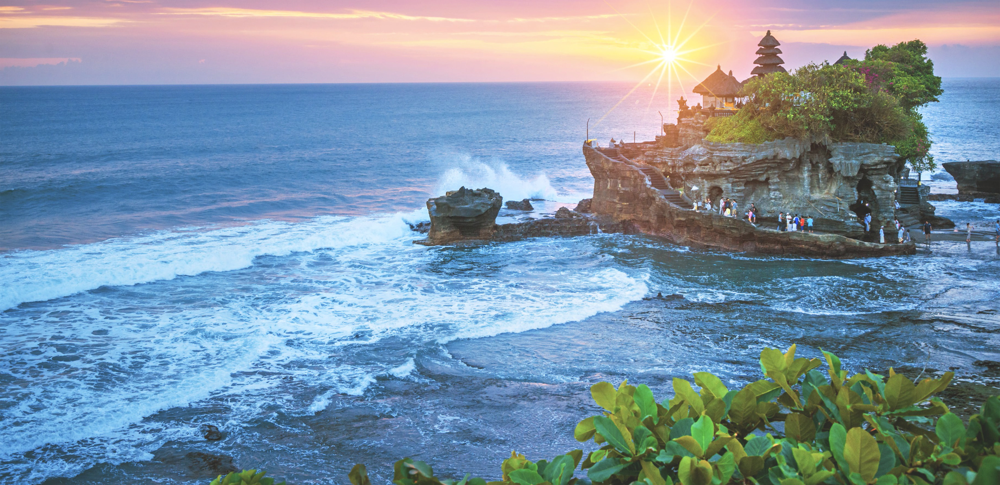

Welcome to my world
I'm Ervlyn, a seeker of beautiful stories.
Biodata Saya
Nama: Ervlyn Wisata
NIM: 12170048
The Narrative of My Journey
Hobi mengerjakan proyek digital sambil mendengarkan lagu adalah cara saya menemukan inspirasi. Perjalanan ke Bali bukan hanya sekadar liburan, tapi cara saya memahami dunia melalui lensa dan tulisan.
music_note
Bernyanyi
Finding rhythm in the chaos of life.
headphones
Mendengarkan Lagu
soundtracks to my daily digital adventures.
flight
Travelling
Exploring new horizons, one city at a time.
restaurant
Favorite Foods
Rendang, Sushi, Sate Ayam - The fuel of life.
Current Location
Mapping the footprints of my exploration.
B A L I
location_on
RECENTLY AT
Jimbaran, Bali
Menikmati seafood di tepi pantai dengan suara ombak yang menenangkan.